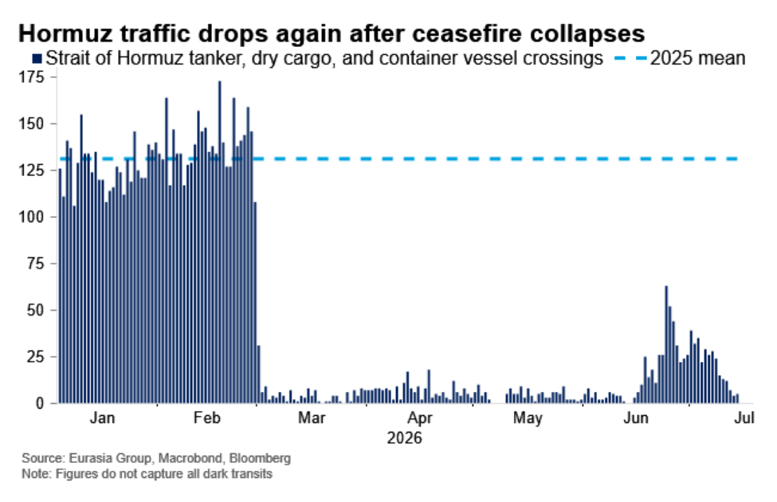
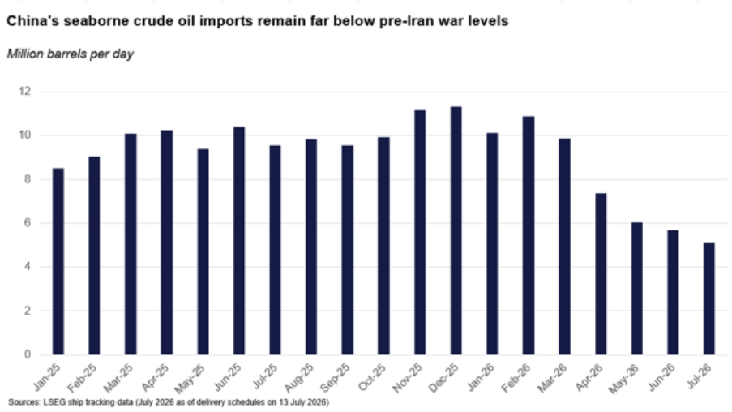

|
14 Jul 2026 08:32 EDT |
||
|
|||
|
|||
summary
|
|||
the top lineThe collapse of the shaky peace between the US and Iran will likely lead to a longer disruption of traffic through the Strait of Hormuz, maintaining upward pressure on crude prices. Today we unpack the implications for the outlook for the war, the impact on energy markets, and the risk of escalation between the Houthis and Saudi Arabia. For more on the MENA crisis, register for the conference call at 11 am ET today here.
Iran, MENA Crisis—Traffic through Hormuz will fall as shaky peace collapses

MENA Crisis, Oil—Brent prices will likely trade in $75-95 range as US resumes blockade

MENA Crisis, Saudi Arabia, Yemen—Airport strike raises risk of Houthi actions targeting Saudi energy
Geo-technology, US, China—Trump 2.0 to widen and soften anti-Huawei telecom strategy
Hungary—Magyar’s cautious economic reset could advance the EU’s China de-risking
US—Graham’s death matters most for Ukraine and Israel
Upcoming conference calls
|
||
eg in depthChina—Conference call notes: Assessing the reset of China-US relations and rising China-EU and China-Japan tensions: Chinese officials expect US-China stability through the end of 2028 but anticipate a more hawkish successor to Trump; the one-year trade truce expiring on 10 November is widely expected to be extended, with Beijing pushing for an extension until the end of Trump’s presidency. China-EU relations are likely heading toward trade conflict; Chinese officials are dismissive of European grievances, confident in their retaliatory toolkit, and actively pursuing a divide-and-conquer strategy among EU member states. China-Japan relations are in a deep freeze with no off-ramp visible; Beijing is likely to expand rare earth restrictions and entity list designations, and bilateral improvement is not expected until Prime Minister Takaichi Sanae leaves office. Read more here. Reach out to discuss: china@eurasiagroup.net.
The EG Daily Brief is compiled by Jens Larsen, Lucy Eve, Babak Minovi, Pietro Guglielmi, Rahul Bhatia, Marilia Sirio, Joseph Craven, Martina Silva, Sol Lopes, and Trista Kelley, with help from Marina Tavares, and Astral Betteridge. |
||
 |
closing quipThe Hormuz Strait is OPEN, and will remain OPEN, with or without Iran.”—Trump posted on Truth Social on Monday morning, announcing the resumption of the US blockade. |
||
 |
|||